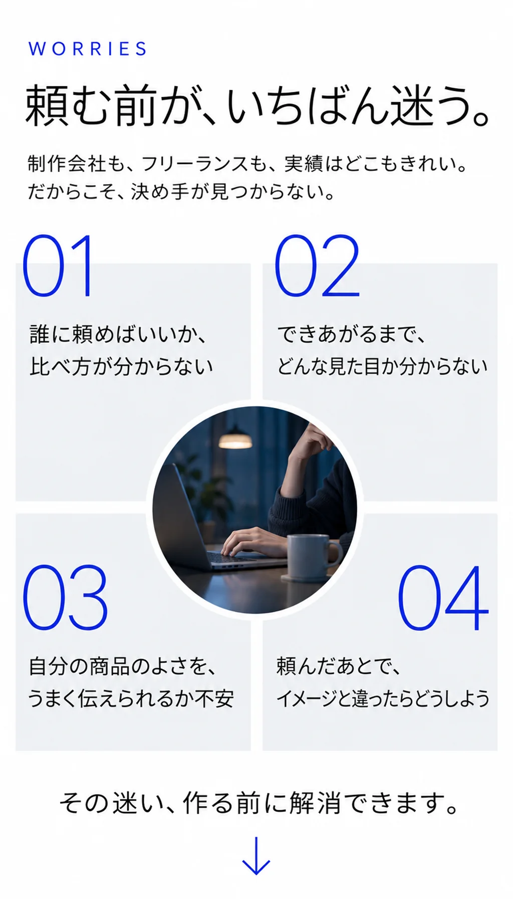
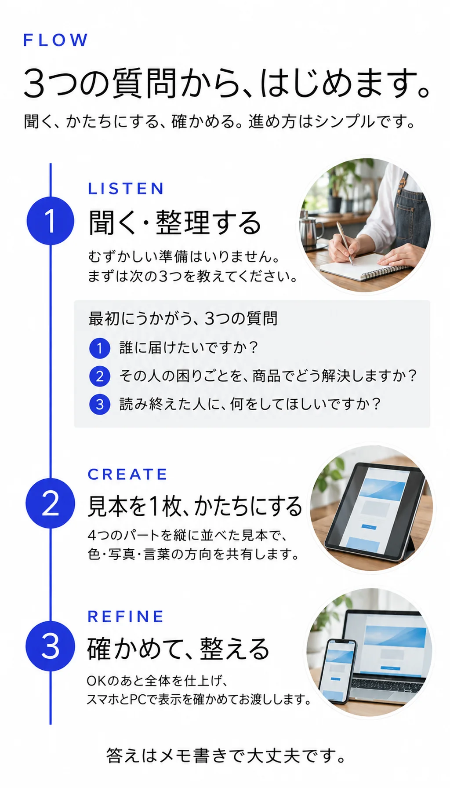
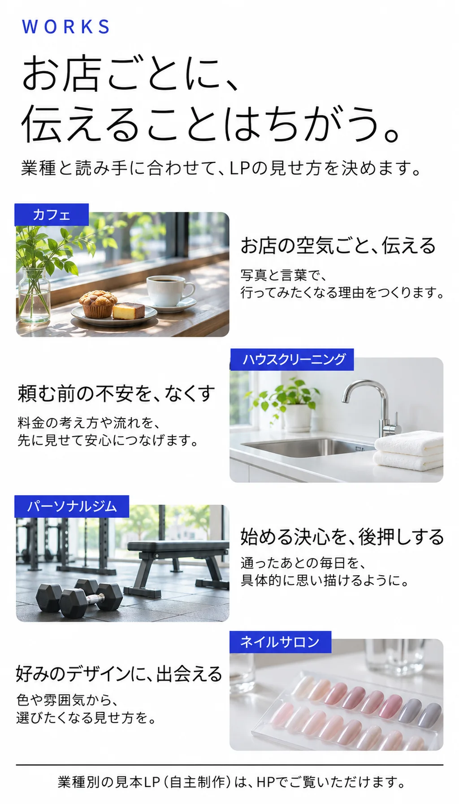
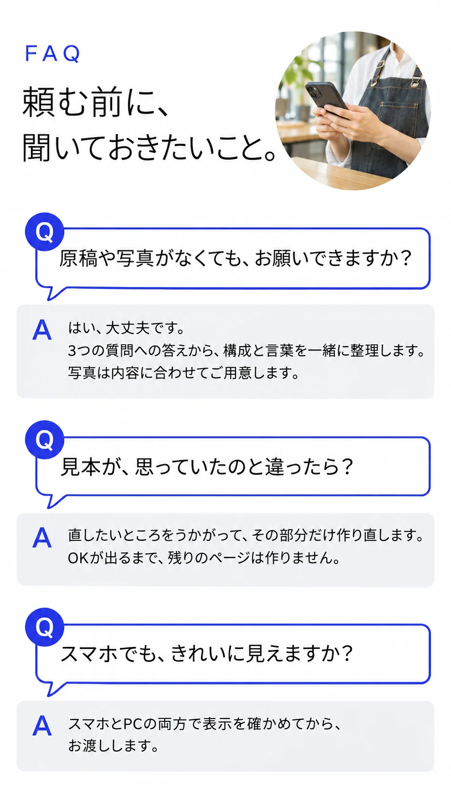

LP制作｜LUME-A Studio

LP DESIGN
目的に合わせて、
ページを組み立てます。
誰に何を届け、どんな行動につなげたいか。ご相談をもとに、必要な内容と制作範囲を決めます。
伝える内容を整理する
商品やサービスの特徴を伺い、読む人が知りたいことから順に並べます。
見本で方向を確かめる
見出し、写真、色づかいを確認し、仕上がりのイメージを共有します。
公開前に表示と動作を確認する
スマホとPCでの読みやすさに加え、予約や相談へのリンクも確認します。


ABOUT THE STUDIO
デザインと技術が出会う、
創造の一室。

伝えたいことを一緒に整理し、読む人が次の行動に移りやすいページに仕上げます。
ホームページ、イラスト、LINEスタンプの制作や、Excel VBAの小さなご相談も承っています。

Q料金と納期は？
A内容と制作範囲をうかがい、料金と納期をお見積もり時にお伝えします。見本制作の条件も、着手前にご案内します。
CONSULTATION SIMULATOR
相談シミュレーター
相談したいことを選んで、3つの質問に答えてください。
答えは相談メモにまとまり、そのままメールで送れます。